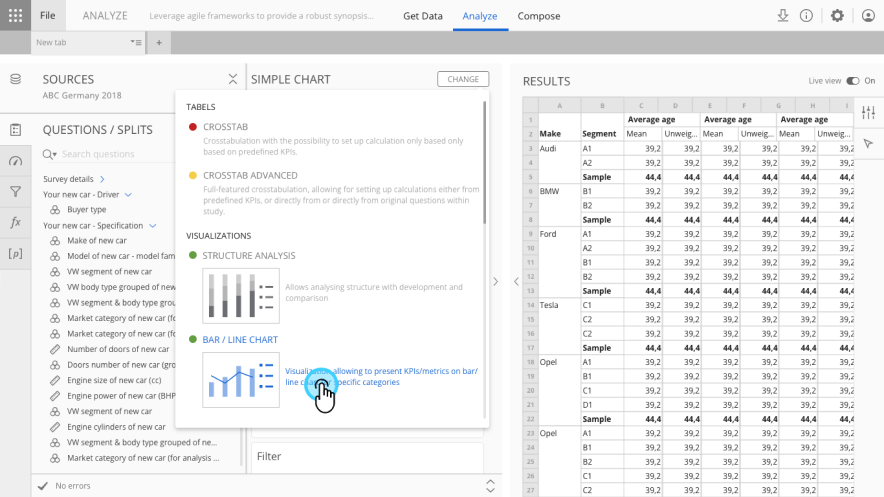
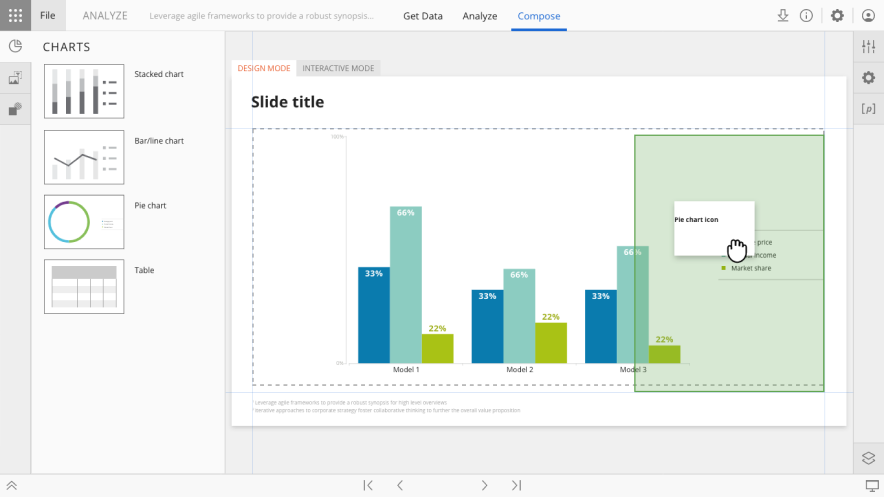
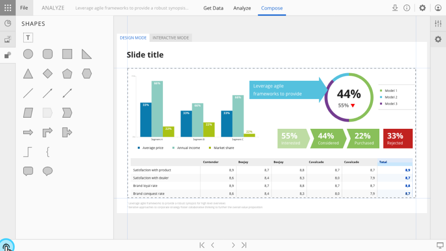

Reports
Cross-tabulation, data visualisation and reporting for market research professionals

Overview
Analyze was Slideworx's main data analysis and reporting tool. It took research professionals all the way from a raw survey dataset to insights, interactive visualisations and reports they could put straight in front of a client.
When it was brought into the Halo platform it was renamed Reports, and today it serves both report authors who build complex analyses and report consumers who explore published findings. As Head of Design, I led the design team and owned the product design across the platform's evolution.
Challenge
When I joined, Analyze already had a solid cross-tabulation module, so researchers could query and slice data perfectly well. What was missing was any way to make those results visual. There was nothing for building custom visualisations, dashboards or a decent-looking report, so people had the data but had to leave the platform to present it.
My role
I came up with the Compose module and saw it through to release. It gave users a slide-based canvas where they could drag and drop their way to complex visualisations, dashboards and reports. This included designing the full set of bespoke visualisation types, theming and conditional formatting, interactive parameters, and the overall editing experience.
Beyond Compose, I led the design of multiple improvements to the existing cross-tabulation tool, including an advanced object editor and a data importing tool. I coordinated a sub-team of designers focused on Reporting throughout, balancing new feature development with ongoing refinements to the core analytical workflow.
Outcome
Reports became the main custom analysis tool for advanced users at some of the world's largest automotive brands: the place to dig into the data, build interactive visualisations and search for insights. It now lives inside Halo, and the unified patterns and simplified editing experience came with it.
What's next
We're building Reports 2 at the moment: a canvas-based reporting tool with AI built in, designed from the ground up to take over from the current Reports and push the idea further.

